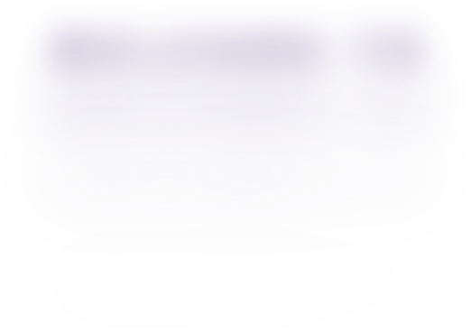
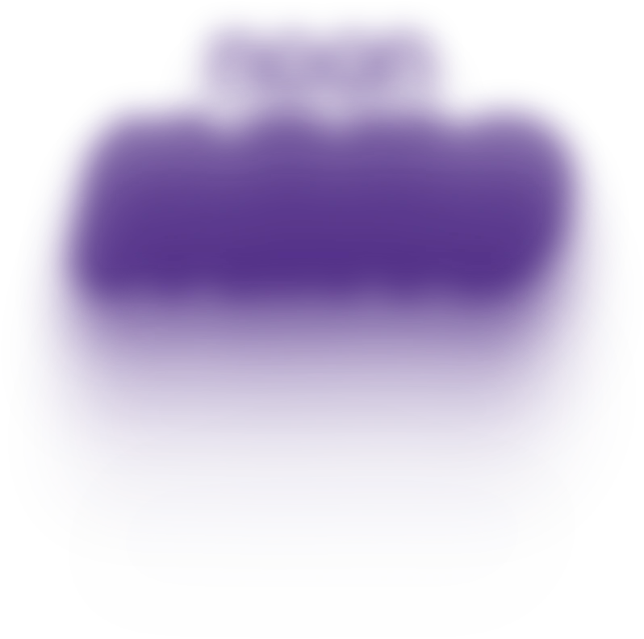
Get started with your email ID
Profile hasn’t be setup by parent
We have sent a 6-digit code to
Didn’t get it?
Wrong OTP, please check it again
OTP Verified, you’re through!
Make your card uniquely yours
Pick your wallet skin
Drag down to confirm
Swipe up to change
Keep going…
Keep this skin
This skin will be on your nano wallet card.You can’t change it once you confirm.
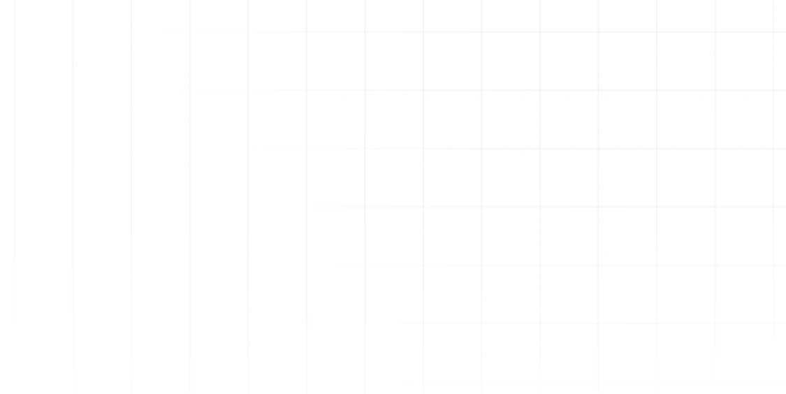
for yourself
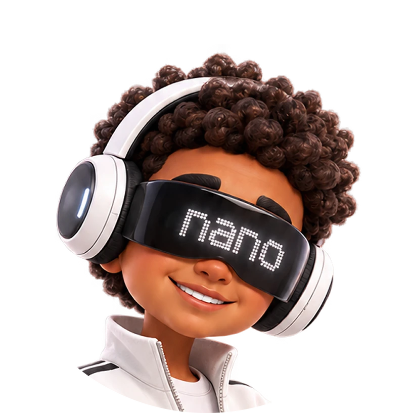
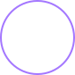
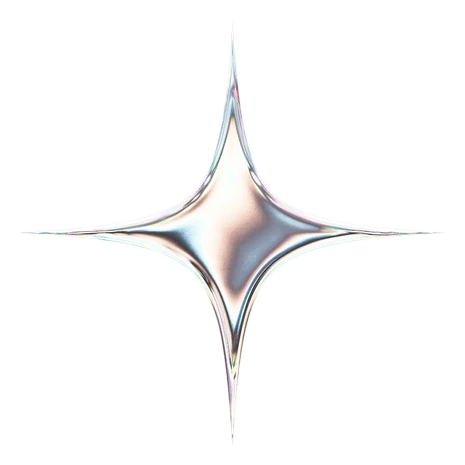
interests?
Pick at least 3 interests
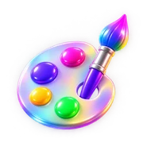
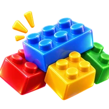
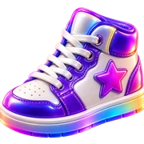
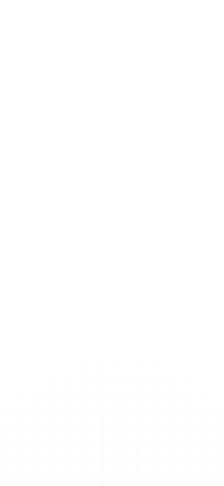
Ask your parents to add money
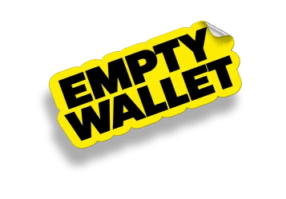
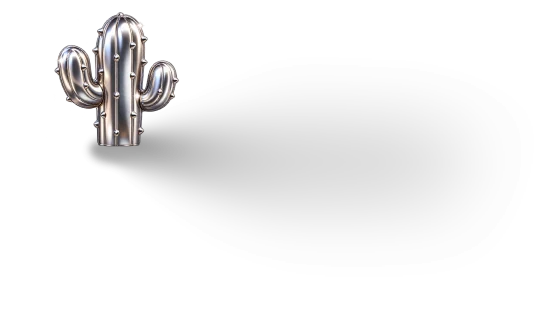
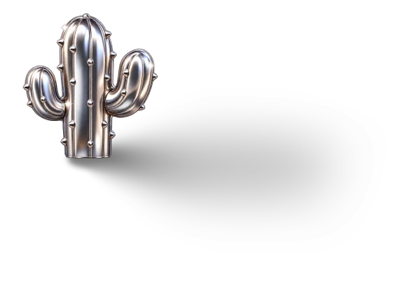
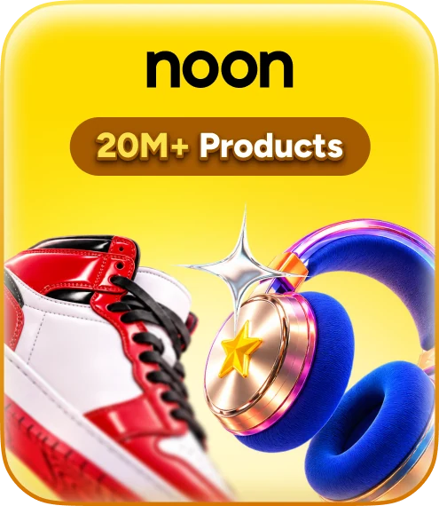
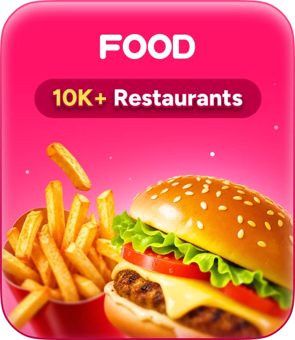
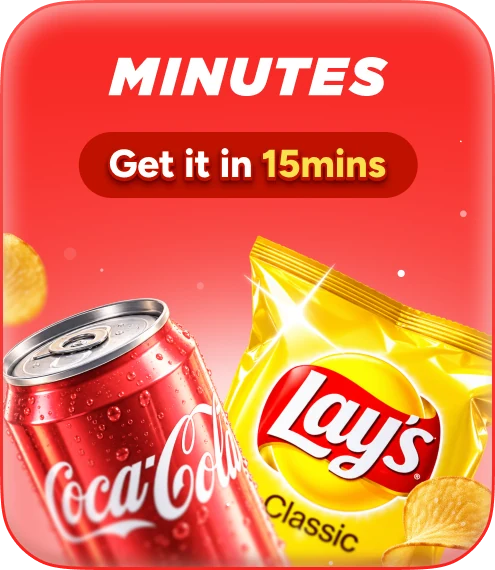
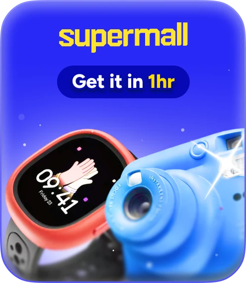
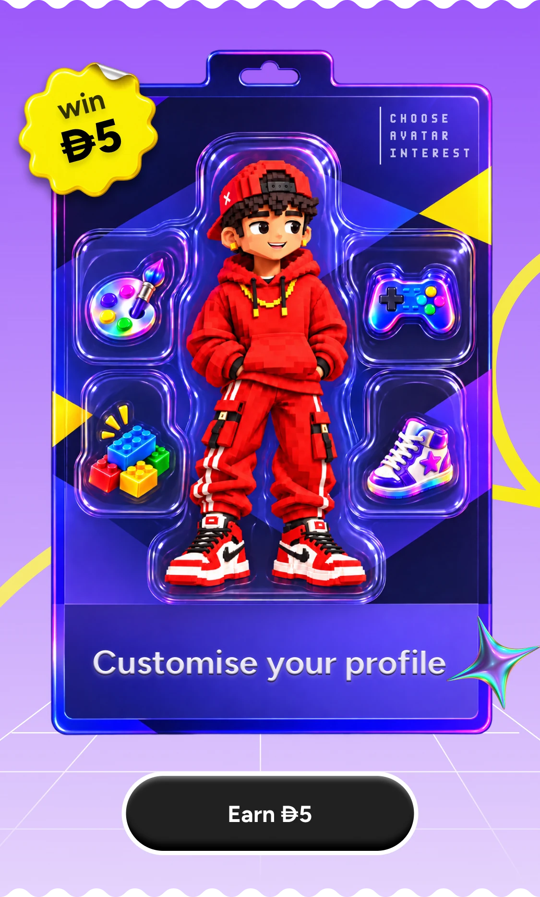
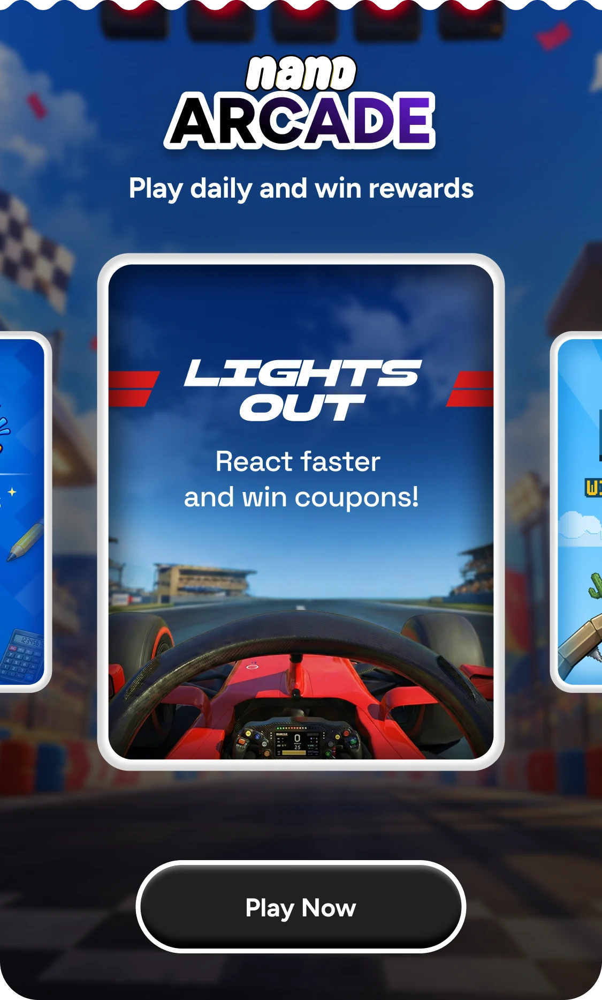
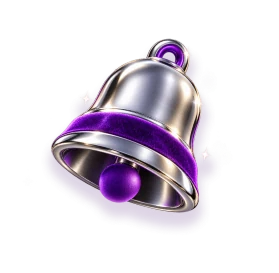